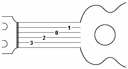
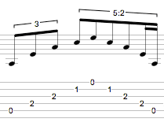

Damit Sie Guitar Pro am Besten und Effektivsten einsetzen kõnnen, sollten Sie:
Wissen, wie man Tabulaturen liest
Ein paar Kenntnisseüber Rhythmik besitzen!
Wir schlagen Ihnen hier eine kurze Einführung der Grundkenntnissen vor.
Die Tabulatur ist eine spezielle Form der Notation von Musik für Saiteninstrumente. Die Tabulaturnotation kann sehr einfach gelernt werden, und man muss vorher nicht etwasüber Musiktheorie erfahren haben. Sie bietet auch den Vorteil, welche Saite gespielt werden muss,was wichtig ist, denn eine gleiche Note kann auf verschiedenen Saiten gespielt werden.

Die Tabulatur ist eine Griffschrift : die Linien sind Abbildungen der 6 Saiten, wobei unten die tiefste Saite (tiefes E) liegt, der Ansicht des Spielers auf das Griffbrett entsprechend, und oben sich die hõchste, dünnste Saite(hohes E) befindet. Die Ziffern zwischen den Taktstrichen geben den Bund an, der gegriffen werden muss. Eine '0' bedeutet, dass die Saite offen, ungegriffen gespielt wird. Dies entspricht dem, wie Sie die Gitarre sehen, wenn Sie auf ihr spielen, und nicht wie Sie sie sehen würden, wenn Sie vor dem Spielenden stehen würden.
Die Musik besteht aus Noten mit unterschiedlichen Dauern. Die Dauer einer Note wird nicht in Sekunden, aber in Bezug auf Tempo ausgedrückt. Eine Viertelnote stellt ein Anschlag da. Das Tempo wird in Schlägen pro Minute ausgedrückt (beats per minute), das heißt, in Schlägen pro Minute. Wenn zum Beispiel ein Anschlag eine Viertelnote lang ist,
und das Tempo des Liedes beträgt 60 bpm, dann entspricht die Viertelnote in diesem Song genau 1 Sekunde. Wenn das Tempo 120 bpm beträgt, hat die Viertelnote eine Zeitdauer von nunmehr einer ½ Sekunde. Noten werden dann in Form von Viertelnoten definiert:
Ist eine Note punktiert, wird ihr Zeitwert anderthalb Mal so lang wie ihre ursprüngliche Dauer (x1,5):

Die n-Tolen (Triolen, Quintolen, Sechstolen..) bestehen aus eine Vielzahl von Noten, die man in einer definierten Zeit spielt. Zum Beispiel, eine Triole aus Achtelnoten (zB 3 x 1 / 2 Anschlag = anderthalb Anschläge) wird auf einen einzigen Anschlag gespielt:

|
|
Die Taktangabe zeigt die Anzahl der Schläge pro Takt. Zum Beispiel : bei dem Vorzeichen 3/4 gibt die 4 an, dass die Referenzzeit des Stückes einer Viertelnote entspricht, und die 3 zeigt an, dass es in diesem Takt drei Anschläge gibt, in diesem Fall 3 Viertelnoten.
The key signature tells you what accidentals (sharps or flats) are systematic in the score. |